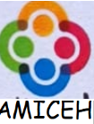

Activités et Services résumés dans le tableau suivant:
| |
des abréviations | ||
|---|---|---|---|
| EHD : Enfant Handicapé à Domicile |
|||
à convenir |
|||
- AD |
DPC: Divertissements, Promenades, Cinemas. AD:Accompagnement Divers. |
||
- Repassages -Autres à convenir |
-8h à convenir |
Nous aidons en priorité les femmes seules ayant un enfant handicapé en charge.
Mais notre assistance est également ouverte à toute personne handicapée majeure ou adulte, ou toute famille ayant un enfant ou une personne handicapée en charge et ayant besoin de nos services.
Vous pouvez prendre contact avec nous en nous appelant directement ou en remplissant notre formulaire de contact. A bientôt.